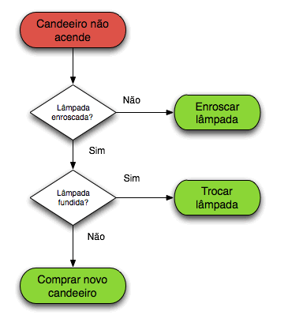
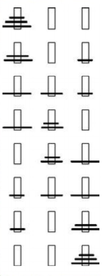

Em matemática e ciência da computação, um algoritmo é uma sequência finita de ações executáveis que visam obter uma solução para um determinado tipo de problema. Segundo Dasgupta, Papadimitriou e Vazirani; "Algoritmos são procedimentos precisos, não ambíguos, padronizados, eficientes e corretos."
As suas características são: finitas, o algoritmo deve eventualmente resolver o problema; bem definidas: os passos devem ser definidos de modo a serem entendidos; efetivas, deve sempre resolver o que tem para solucionar, antecipando falhas. O conceito de algoritmo existe há séculos e o uso do conceito pode ser atribuído a matemáticos russos, por exemplo a Peneira de Eratóstenes e o algoritmo de Euclides.
O conceito de algoritmo é frequentemente ilustrado pelo exemplo de uma receita culinária, embora muitos algoritmos sejam mais complexos. Eles podem repetir passos (fazer iterações) ou necessitar de decisões (tais como comparações ou lógica) até que a tarefa seja completada. Um algoritmo corretamente executado não irá resolver um problema se estiver implementado incorretamente ou se não for apropriado ao problema.
Um algoritmo não representa, necessariamente, um programa de computador, e sim os passos necessários para realizar uma tarefa. Sua implementação pode ser feita por um computador, por outro tipo de autômato ou mesmo por um ser humano. Diferentes algoritmos podem realizar a mesma tarefa usando um conjunto diferenciado de instruções em mais ou menos tempo, espaço ou esforço do que outros. Tal diferença pode ser reflexo da complexidade computacional aplicada, que depende de estruturas de dados adequadas ao algoritmo. Por exemplo, um algoritmo para se vestir pode especificar que você vista primeiro as meias e os sapatos antes de vestir a calça enquanto outro algoritmo especifica que você deve primeiro vestir a calça e depois as meias e os sapatos. Fica claro que o primeiro algoritmo é mais difícil de executar que o segundo apesar de ambos levarem ao mesmo resultado.
O conceito de um algoritmo foi formalizado em 1936 pela Máquina de Turing de Alan Turing e pelo cálculo lambda de Alonzo Church, que formaram as primeiras fundações da Ciência da computação.
Uma animação do algoritmo de ordenação quicksort de uma matriz de valores ao acaso. As barras vermelhas marcam o elemento pivô. No início da animação, estando o elemento para o lado direito, é escolhido como o pivô
Etimologia
Os historiadores da palavra algoritmo encontraram a origem no sobrenome, Al-Khwarizmi, do matemático persa do século IX Mohamed ben Musa, cujas obras foram traduzidas no ocidente cristão no século XII, tendo uma delas recebido o nome Algorithmi de numero indorum, sobre os algoritmos usando o sistema de numeração decimal (indiano). Outros autores, entretanto, defendem a origem da palavra em Al-goreten (raiz - conceito que se pode aplicar aos cálculos).
"Álgebra" e "algorismo" também formam formas corrompidas da palavra, pois as pessoas esqueciam as derivações originais. O dicionário "Vollständiges Mathematisches Lexicon" (Leipzig, 1747) refere a palavra "Algorithmus"; nesta designação estão combinadas as noções de quatro cálculos aritméticos, nomeadamente a adição, multiplicação, subtração e divisão. A frase "algorithmus infinitesimalis" foi na altura utilizada para significar; "maneiras de calcular com quantidades infinitésimas" (pequenas), uma invenção de Leibnitz. Também é conhecido no meio financeiro, como "algos".
Formalismo

Fluxograma, um exemplo de algoritmo imperativo. O estado em vermelho indica a entrada do algoritmo enquanto os estados em verde indicam as possíveis saídas.
Um programa de computador é essencialmente um algoritmo que diz ao computador os passos específicos e em que ordem eles devem ser executados, como por exemplo, os passos a serem tomados para calcular as notas que serão impressas nos boletins dos alunos de uma escola. Logo, o algoritmo pode ser considerado uma sequência de operações que podem ser simuladas por uma máquina de Turing completa.
Quando os procedimentos de um algoritmo envolvem o processamento de dados, a informação é lida de uma fonte de entrada, processada e retornada sob novo valor após processamento, o que geralmente é realizado com o auxílio de uma ou mais estrutura de dados.
Para qualquer processo computacional, o algoritmo precisa estar rigorosamente definido, especificando a maneira que ele se comportará em todas as circunstâncias. A corretividade do algoritmo pode ser provada matematicamente, bem como a quantidade assintótica de tempo e espaço (complexidade) necessários para a sua execução. Estes aspectos dos algoritmos são alvo da análise de algoritmos.
A maneira mais simples de se pensar um algoritmo é por uma lista de procedimentos bem definida, na qual as instruções são executadas passo a passo a partir do começo da lista, uma ideia que pode ser facilmente visualizada através de um fluxograma. Tal formalização adota as premissas da programação imperativa, que é uma forma mecânica para visualizar e desenvolver um algoritmo. Concepções alternativas para algoritmos variam em programação funcional e programação lógica.
Exemplos
Alguns exemplos genéricos de algoritmos são: uma coreografia, um manual de instruções, uma receita culinária, Técnicas para resolver problemas matemáticos, uma pesquisa na internet, dentre outros.
Torre de Hanói
Imagem da torre de Hanói (com três discos), mostrando como estariam as peças no início e no fim da solução
Um clássico problema que trabalha o desenvolvimento da lógica e do raciocínio matemático é a torre de Hanói, inventado pelo matemático francês Édouard Lucas em 1883. O quebra-cabeça é composto por três hastes e vários discos de tamanhos diferentes, que podem deslizar para qualquer haste. O quebra-cabeça começa com os discos em uma pilha organizada em ordem crescente de tamanho em uma haste, a menor no topo, fazendo assim uma forma cônica.
Neste exemplo, toma-se o seguinte problema: tem-se três hastes. Umas das hastes serve de suporte para três discos. Deseja-se mover todos os discos para outra haste, porém deve-se movimentar um disco de cada vez e um disco maior nunca pode ser colocado sobre um disco de menor tamanho.
Solução em forma narrativa

Nomeiam-se as hastes como A, B e C e os discos como Vermelho, Verde e Azul. Considera-se que inicialmente os discos estão na haste A. Segue uma sequência de passos para a resolução do quebra-cabeça:
1. move-se o disco Vermelho para a haste C;
2. move-se o disco Verde para a haste B;
3. move-se o disco Vermelho para a haste B;
4. move-se o disco Azul para a haste C;
5. move-se o disco Vermelho para a haste A;
6. move-se o disco Verde para a haste C;
7. move-se o disco Vermelho para a haste C
Solução em forma gráfica
Podemos também representar a solução em forma gráfica, desenhando as hastes e a posição dos discos a cada movimento (ou passo). Com 3 discos, o quebra-cabeça pode ser resolvido em 7 movimentos. O número mínimo de movimentos necessários para resolver um quebra-cabeça da Torre de Hanói é {\displaystyle 2^{n}-1}{\displaystyle 2^{n}-1}, onde n é o número de discos.
Essa sequência, ou descrição, finita de passos ou tarefas é a quem chamamos de algoritmos.
Análise de algoritmos
A análise de algoritmos é um ramo da ciência da computação que estuda as técnicas de projeto de algoritmos e os algoritmos de forma abstrata, sem estarem implementados em uma linguagem de programação em particular ou implementadas de algum outro modo. Ela preocupa-se com os recursos necessários para a execução do algoritmo tais como o tempo de execução e o espaço de armazenamento de dados. Deve-se perceber que para um dado algoritmo pode-se ter diferentes quantidades de recursos alocados de acordo com os parâmetros passados na entrada. Por exemplo, se definirmos que o fatorial de um número natural é igual ao fatorial de seu antecessor multiplicado pelo próprio número, fica claro que a execução de fatorial(10) consome mais tempo que a execução de fatorial(5).
Um meio de exibir um algoritmo a fim de analisá-lo é através da implementação por pseudocódigo em português estruturado, também conhecido no Brasil como Portugol. Este código pode ser digitado dentro de algum editor de textos como o Bloco de Notas, anotado num caderno ou ainda poder digitado diretamente dentro de um programa interpretador de algoritmos, como é caso do Visualg, que é um editor, interpretador e executor dos algoritmos.
Classificação
Classificação por implementação
Pode-se classificar algoritmos pela maneira pelo qual foram implementados:
Recursivo ou iterativo - um algoritmo recursivo possui a característica de invocar a si mesmo repetidamente até que certa condição seja satisfeita e ele é terminado, que é um método comum em programação funcional. Algoritmos iterativos usam estruturas de repetição tais como laços, ou ainda estruturas de dados adicionais tais como pilhas, para resolver problemas. Cada algoritmo recursivo possui um algoritmo iterativo equivalente e vice-versa, mas que pode ter mais ou menos complexidade em sua construção;
Lógico - um algoritmo pode ser visto como uma dedução lógica controlada. O componente lógico expressa os axiomas usados na computação e o componente de controle determina a maneira como a dedução é aplicada aos axiomas. Tal conceito é base para a programação lógica;
Serial ou paralelo - algoritmos são geralmente assumidos por serem executados instrução a instrução individualmente, como uma lista de execução, o que constitui um algoritmo serial. Tal conceito é base para a programação imperativa. Por outro lado existem algoritmos executados paralelamente, que levam em conta as arquiteturas de computadores com mais de um processador para executar mais de uma instrução ao mesmo tempo. Tais algoritmos dividem os problemas em subproblemas e o delegam a quantos processadores estiverem disponíveis, agrupando no final o resultado dos subproblemas em um resultado final ao algoritmo. Tal conceito é base para a programação paralela. De forma geral, algoritmos iterativos são paralelizáveis; por outro lado existem algoritmos que não são paralelizáveis, chamados então problemas inerentemente seriais;
Determinístico ou não-determinístico - algoritmos determinísticos resolvem o problema com uma decisão exata a cada passo enquanto algoritmos não-determinísticos resolvem o problema ao deduzir os melhores passos através de estimativas sob forma de heurísticas;
Exato ou aproximado - enquanto alguns algoritmos encontram uma resposta exata, algoritmos de aproximação procuram uma resposta próxima a verdadeira solução, seja através de estratégia determinística ou aleatória. Possuem aplicações práticas sobretudo para problemas muito complexos, do qual uma resposta correta é inviável devido à sua complexidade computacional.
Classificação por paradigma
Pode-se classificar algoritmos pela metodologia ou paradigma de seu desenvolvimento, tais como:
Divisão e conquista - algoritmos de divisão e conquista reduzem repetidamente o problema em sub-problemas, geralmente de forma recursiva, até que o sub-problema é pequeno o suficiente para ser resolvido. Um exemplo prático é o algoritmo de ordenação merge sort. Uma variante dessa metodologia é o decremento e conquista, que resolve um sub-problema e utiliza a solução para resolver um problema maior. Um exemplo prático é o algoritmo para pesquisa binária;
Programação dinâmica - pode-se utilizar a programação dinâmica para evitar o re-cálculo de soluções já resolvidas anteriormente;
Algoritmo ganancioso - um algoritmo ganancioso é similar à programação dinâmica, mas difere na medida em que as soluções dos sub-problemas não precisam ser conhecidas a cada passo, uma escolha gananciosa pode ser feita a cada momento com o que até então parece ser mais adequado;
Programação linear - A resolução de um problema através de programação linear envolve a maximização / minimização das entradas de um conjunto de desigualdades lineares;
Redução - a redução resolve o problema ao transformá-lo em outro problema. É chamado também transformação e conquista;
Busca e enumeração - vários problemas podem ser modelados através de grafos. Um algoritmo de exploração de grafo pode ser usado para caminhar pela estrutura e retornam informações úteis para a resolução do problema. Esta categoria inclui algoritmos de busca e backtracking;
Paradigma heurístico e probabilístico - algoritmos probabilísticos realizam escolhas aleatoriamente. Algoritmos genéticos tentam encontrar a solução através de ciclos de mutações evolucionárias entre gerações de passos, tendendo para a solução exata do problema. Algoritmos heurísticos encontram uma solução aproximada para o problema.
Classificação por campo de estudo
Cada campo da ciência possui seus próprios problemas e respectivos algoritmos adequados para resolvê-los. Exemplos clássicos são algoritmos de busca, de ordenação, de análise numérica, de teoria de grafos, de manipulação de cadeias de texto, de geometria computacional, de análise combinatória, de aprendizagem de máquina, de criptografia, de compressão de dados e de interpretação de texto.
Classificação por complexidade
Alguns algoritmos são executados em tempo linear, de acordo com a entrada, enquanto outros são executados em tempo exponencial ou até mesmo nunca terminam de serem executados. Alguns ditos problemas tem múltiplos algoritmos enquanto outros não possuem algoritmos para resolução.
Implementação
Algoritmos podem ser implementados em circuitos elétricos ou até mesmo em dispositivos mecânicos (autômatos).Mania dos inventores do século XIX, os autômatos eram máquinas totalmente mecânicas, construídas com a capacidade de serem programadas para realizar um conjunto de atividades autônomas. Em 2011, o filme A Invenção de Hugo Cabret (tradução brasileira) do cineasta Martin Scorsese traz a história do ilusionista Georges Méliès precursor do cinema e um colecionador de autômatos, sendo uma de suas máquinas o fio condutor desta história. O autômato específico era capaz de desenhar a cena emblemática do seu filme "Viagem à Lua"
Entretanto, a maioria dos algoritmos são desenvolvidos para programas de computador, para isto, existe uma grande variedade de linguagens de programação, cada uma com características específicas que podem facilitar a implementação de determinados algoritmos ou atender a propósitos mais gerais.
Programa de Computador
Ada Lovelace escreveu o primeiro algoritmo para ser processado por uma máquina, a máquina analítica de Charles Babbage. Um programa de computador é essencialmente um algoritmo que diz ao computador os passos específicos e em que ordem eles devem ser executados. Usando o Pseudocódigo (uma linguagem simples, nativa a quem o escreve, de forma a ser entendida por qualquer pessoa) que é uma forma genérica de escrever o algoritmo, sem necessidade de conhecer a sintaxe de nenhuma linguagem de programação. Um exemplo de pseudocódigo é o Portugol, que utiliza o compilador VisuALG.
O VisuAlg é um programa que edita, interpreta e executa algoritmos com uma linguagem próxima do português estruturado como um programa normal de computador. É um programa de livre uso e distribuição, empregado no ensino de programação em várias escolas e universidades no Brasil e no exterior. Quando os procedimentos de um algoritmo envolvem o processamento de dados, a informação é lida de uma fonte de entrada, processada e retornada sob novo valor após processamento, o que geralmente é realizado com o auxílio de um conjunto de instruções e estrutura de dados. Um exemplo, para ser feito nas escolas é fazer os passos a serem tomados para calcular as notas que serão impressas nos boletins dos alunos de uma escola, informando se o aluno foi aprovado ou reprovado.